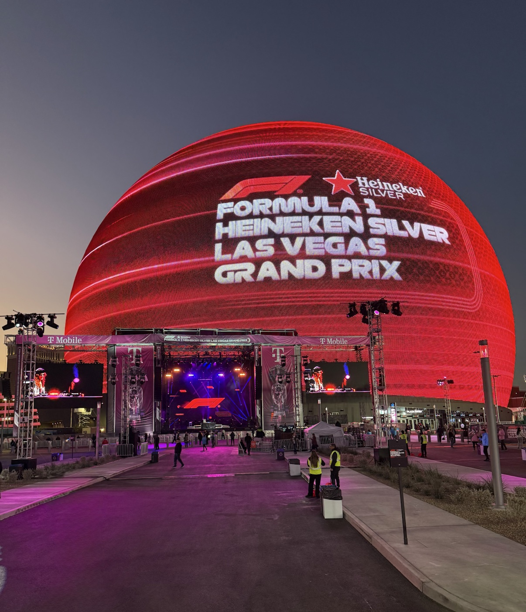
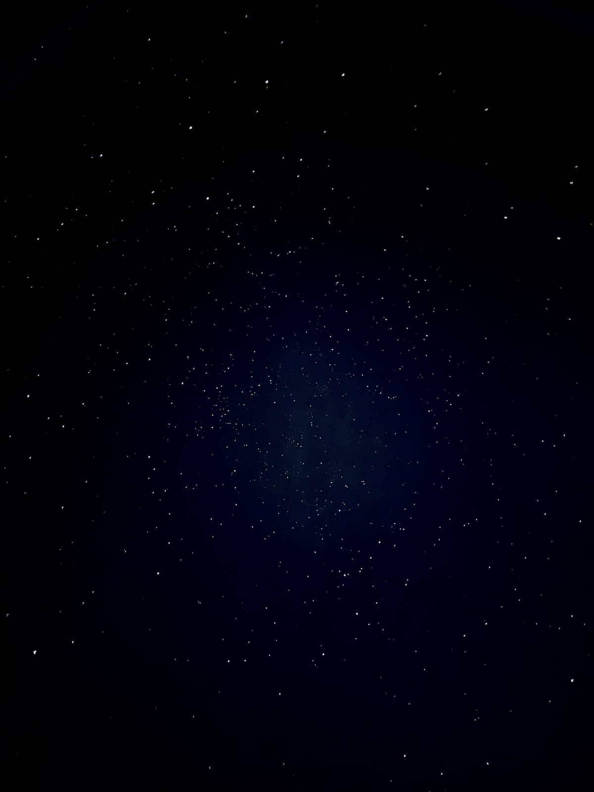
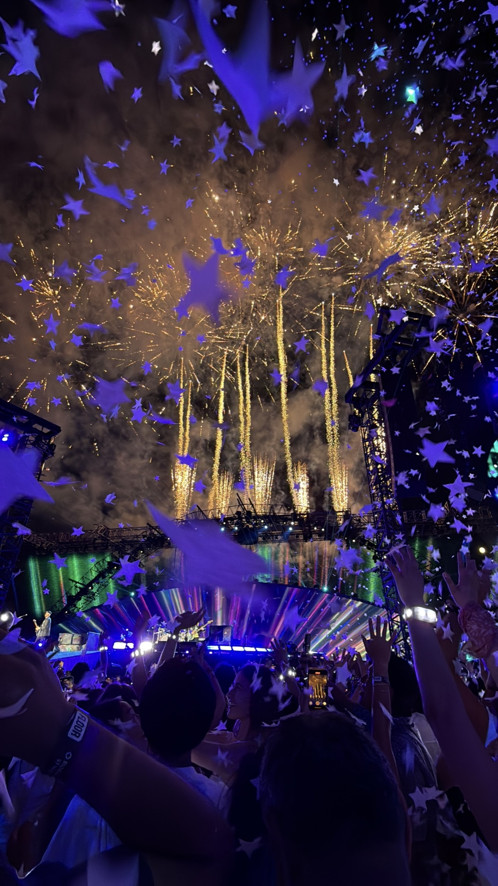
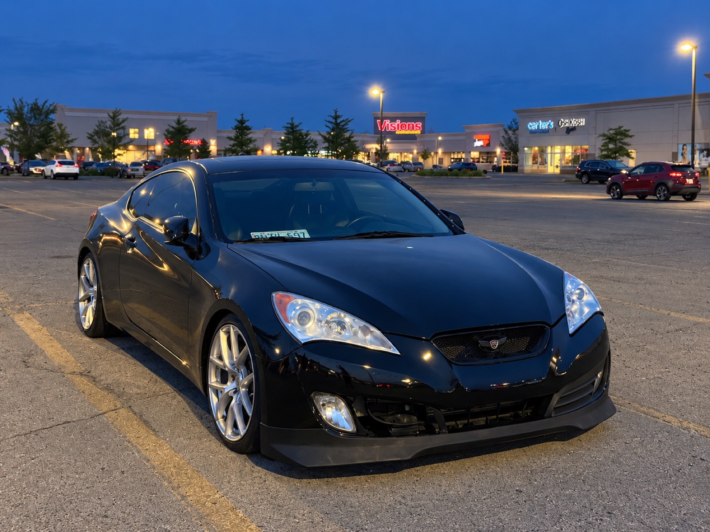

Skip to content
sarah khan
✳
experience
about
play break
↗
résumé ↗
← Back to portfolio
Hobbies

Las Vegas GP

Stars through my telescope

Coldplay concert

My Genesis Coupe I love working on
←
1 / 4
→